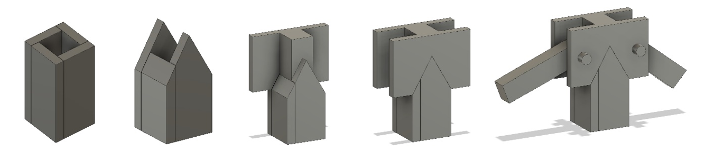
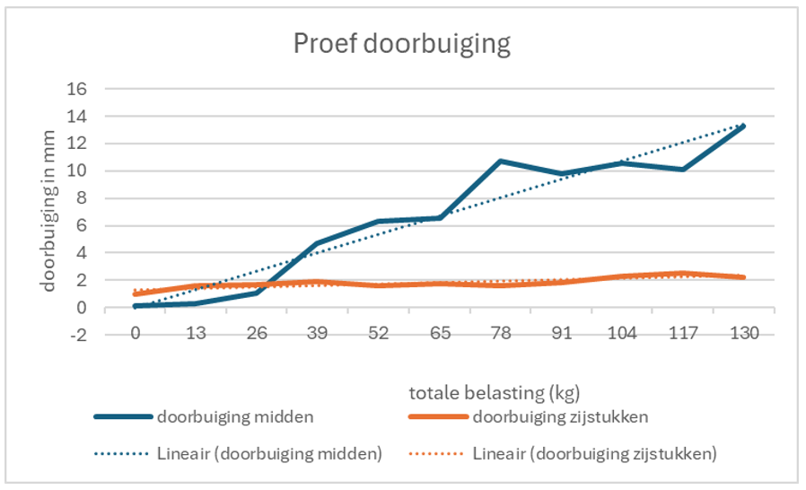

Civil Engineering : Bridge construction (VUB)
Introduction
To begin, we faced specific constraints. The bridge's total length and segment lengths were predetermined, restricting our design options. Additionally, the use of materials other than MDF was prohibited, meaning even the suspension cables had to be made from wood segments. This project spanned 6 days spread over 6 weeks, involving a team of 5 engineering students. Ultimately, the bridge would undergo load testing. Each segment's deflection had to stay within 1% of its length.
The bridge needed to be structurally sound while using minimal material. Excessive material would be wasteful, while too little would compromise its strength, potentially leading to failure and unnecessary costs. Despite these constraints, we had creative freedom to design an efficient and effective structure.
We opted for a suspension bridge with tall, leaning pylons towards the anchor points, aiming to counteract central deflection with additional force from the pylon mass center. We minimized support on the pylons for aesthetic reasons, necessitating careful design to avoid moments on the pylons and ensure their structural integrity.
The bridge needed to be structurally sound while using minimal material. Excessive material would be wasteful, while too little would compromise its strength, potentially leading to failure and unnecessary costs. Despite these constraints, we had creative freedom to design an efficient and effective structure.
MDF
Our initial step involved gathering data on the MDF's properties through tensile testing, identifying its elastic and plastic regions, Young's modulus, ultimate tensile strength, and yield stress.
With this data, we began designing the bridge. Using principles learned in structural analysis, we calculated the static forces and moments, then determined the pylon and cable dimensions accordingly. The hanging cable's shape was crucial and derived from the moment diagram of a linear beam under distributed load, adapted for our segmented wood sections.
Extensive calculations followed, with iterations to refine our design decisions. Ultimately, we developed a Python script to automate these calculations, though its complexity posed challenges, especially with considerations for leaning pylons and uneven segment heights.
SCIA
Once our program was operational, we visualized and analyzed the bridge's dimensions using tools like Geogebra and SCIA to ensure structural stability and validate deflection limits.Calculation and building
While SCIA facilitated thorough structural analysis, certain aspects required manual calculation, such as determining pylon dimensions to withstand all loads and designing cable connections.
Following construction, we loaded the bridge and measured its deflection, as shown in the graph. It failed under a 286 kg load, close to its specified limit of 260 kg, confirming failure occurred at the point of highest stress, consistent with our calculations based on MDF properties.

Further calculations addressed potential collapse due to buckling or bending, essential before commencing the 2-day construction phase. Building the bridge proved more challenging than anticipated, yet we successfully constructed a well-engineered structure, as depicted in the accompanying photos.

Conclusion
In conclusion, this project provided valuable hands-on experience bridging theory and practice in civil engineering, underscoring both the challenges and rewards of practical application in our field.